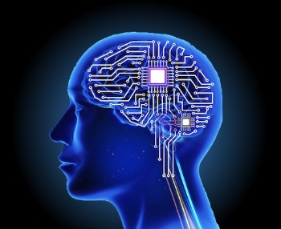

Each of the students in the class have gone through the demanding and impressive Java I and II courses at the Bishop's School. They are all ready to learn and take on the challenging Honors Computer's Science course. Click here to visit the Students page. 
We study computer science for the future. In a world where humans have just glimpsed the beginnings of computers, AI, space travel, biotech, and more, a background in computer science becomes ever-more important. As technology advances, more and more will be developed, and mankind will one day be able to do things we never dreamed of. Why would you not want to learn computer science? Click here to learn about our curriculum.
Evan Coats and Lucas Buu-Hoan are two expirienced coders with knowledge of HtML / CSS, Java, Processing, and more. Both students attend the Bishop'sc School in La Jolla, California. They are currently in an Honors Computer Science Class, hence the project. This whole website was made without any full templates. For more information, you can contact Evan and Lucas at evan.coats.21@bishops.com and lucas.buu-hoan.21@bishops.com